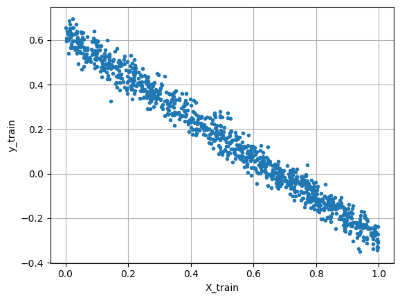
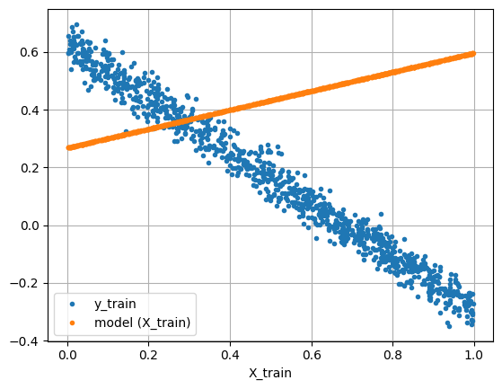

import numpy as np
import matplotlib.pyplot as plt
from matplotlib import colors4 stuff covered
- Datasets
- Models
- Losses
- Optimizers
5 Datasets
5.0.1 A raw dataset
The data are obtained from the model
input_dim = 1
output_dim = 1
A = 2 * np.random.rand(output_dim, input_dim) - 1
b = 2 * np.random.rand(output_dim) - 1
true_model = lambda x : A @ x + bn_train = 1000
noise_level = 0.04
X_train = np.random.rand(n_train, input_dim)
y_train = np.array([true_model(x) for x in X_train])
y_train += noise_level * np.random.standard_normal(size=y_train.shape)if input_dim == output_dim == 1:
fig = plt.figure()
fig.clf()
ax = fig.clf()
ax =fig.gca()
ax.plot(X_train, y_train, '.')
ax.grid(True)
ax.set_xlabel('X_train')
ax.set_ylabel('y_train')
6 Pytorch dataset
import torch
class VectorialDataset(torch.utils.data.Dataset):
def __init__(self, input_data, output_data):
super(VectorialDataset, self).__init__()
self.input_data = torch.tensor(input_data.astype('f'))
self.output_data = torch.tensor(output_data.astype('f'))
def __len__(self):
return self.input_data.shape[0]
def __getitem__(self, idx):
if torch.is_tensor(idx):
idx = idx.tolist()
sample = (self.input_data[idx, :], self.output_data[idx, :])
return sampletraining_set = VectorialDataset(input_data = X_train,
output_data = y_train)
len(training_set)1000training_set[10:12](tensor([[0.8926],
[0.8290]]),
tensor([[-0.2250],
[-0.2084]]))batch_size = 120
train_loader = torch.utils.data.DataLoader(training_set,
batch_size = batch_size,
shuffle=True)for idx, batch in enumerate(train_loader):
print("Batch n. %2d: input size = %s, output size = %s" % (idx + 1, batch[0].shape, batch[1].shape))Batch n. 1: input size = torch.Size([120, 1]), output size = torch.Size([120, 1])
Batch n. 2: input size = torch.Size([120, 1]), output size = torch.Size([120, 1])
Batch n. 3: input size = torch.Size([120, 1]), output size = torch.Size([120, 1])
Batch n. 4: input size = torch.Size([120, 1]), output size = torch.Size([120, 1])
Batch n. 5: input size = torch.Size([120, 1]), output size = torch.Size([120, 1])
Batch n. 6: input size = torch.Size([120, 1]), output size = torch.Size([120, 1])
Batch n. 7: input size = torch.Size([120, 1]), output size = torch.Size([120, 1])
Batch n. 8: input size = torch.Size([120, 1]), output size = torch.Size([120, 1])
Batch n. 9: input size = torch.Size([40, 1]), output size = torch.Size([40, 1])first_batch = []
for epoch in range(2):
for idx, batch in enumerate(train_loader):
if idx == 0:
first_batch.append(batch)
np.c_[X_train[:batch_size], first_batch[0][0].numpy(), first_batch[1][0].numpy()]array([[0.99441294, 0.88566828, 0.90638602],
[0.71332327, 0.25848401, 0.09608797],
[0.3851813 , 0.64516836, 0.68892878],
[0.31010884, 0.85967344, 0.37709296],
[0.05905315, 0.281896 , 0.47578371],
[0.93848683, 0.29293627, 0.00753411],
[0.50167444, 0.54246819, 0.48315424],
[0.79054474, 0.89020598, 0.77863574],
[0.99751762, 0.22161275, 0.10783614],
[0.96920575, 0.72366333, 0.03943504],
[0.89263485, 0.45239502, 0.03817135],
[0.82903649, 0.42025983, 0.80356568],
[0.66041292, 0.82903647, 0.59217465],
[0.54318451, 0.57972568, 0.30210105],
[0.12219063, 0.7035467 , 0.01280502],
[0.12336011, 0.50322264, 0.78283191],
[0.57840621, 0.39421234, 0.26313797],
[0.60122219, 0.28883293, 0.0648143 ],
[0.23635884, 0.43369856, 0.96331966],
[0.49244715, 0.87910348, 0.23238443],
[0.76760602, 0.74016517, 0.81064886],
[0.124236 , 0.34805065, 0.7856667 ],
[0.99684241, 0.58950341, 0.58950341],
[0.17274168, 0.77288872, 0.35998109],
[0.93988512, 0.09608797, 0.24329041],
[0.88006585, 0.45752376, 0.01388622],
[0.30657252, 0.58852458, 0.69125623],
[0.69952798, 0.79163045, 0.48857278],
[0.88943682, 0.24400333, 0.9872328 ],
[0.55080383, 0.92173958, 0.32762069],
[0.51320146, 0.21320648, 0.68602443],
[0.96090869, 0.828637 , 0.93523026],
[0.72400397, 0.03687207, 0.56985676],
[0.02360363, 0.3668623 , 0.2627891 ],
[0.52421809, 0.38933042, 0.81937206],
[0.95005384, 0.06986201, 0.11641955],
[0.09956453, 0.79054475, 0.57839799],
[0.44530446, 0.06964737, 0.23636465],
[0.71552746, 0.48218346, 0.68855178],
[0.41688852, 0.96209741, 0.828637 ],
[0.89920069, 0.93988514, 0.13591732],
[0.41888738, 0.25178304, 0.85155219],
[0.01280502, 0.95430303, 0.99684238],
[0.58086366, 0.67945826, 0.34696212],
[0.88979192, 0.94928753, 0.18972977],
[0.0982474 , 0.38136426, 0.09368064],
[0.9942374 , 0.0221359 , 0.58914739],
[0.31588371, 0.96090871, 0.87985909],
[0.11780005, 0.98523474, 0.8765052 ],
[0.04699188, 0.96071446, 0.68318546],
[0.78509243, 0.65596133, 0.68043625],
[0.34406435, 0.22218627, 0.12874915],
[0.17844747, 0.86949039, 0.24557385],
[0.61174964, 0.22043672, 0.14361537],
[0.32081802, 0.12752514, 0.62298632],
[0.16325195, 0.6324504 , 0.51320148],
[0.59267516, 0.2627891 , 0.17386498],
[0.89435327, 0.27717113, 0.49589038],
[0.99559236, 0.72400397, 0.01518937],
[0.84451628, 0.81937206, 0.71446478],
[0.37893227, 0.30432567, 0.04866788],
[0.61828079, 0.27384785, 0.89980233],
[0.52317273, 0.96006864, 0.86317033],
[0.29240602, 0.11641955, 0.16851683],
[0.78179026, 0.61130887, 0.52317274],
[0.87650519, 0.14638011, 0.55160248],
[0.76234368, 0.63475406, 0.05731268],
[0.59705291, 0.92635489, 0.55611342],
[0.05280673, 0.33815414, 0.38518131],
[0.03624628, 0.13451321, 0.71625119],
[0.67292853, 0.02615269, 0.88402104],
[0.49495131, 0.46950278, 0.94179547],
[0.24508904, 0.03522599, 0.51866555],
[0.0767747 , 0.88006586, 0.4929468 ],
[0.8526227 , 0.77501941, 0.34475401],
[0.98155471, 0.4186168 , 0.28138912],
[0.34949342, 0.58146203, 0.57018268],
[0.6416756 , 0.80419493, 0.593328 ],
[0.1233906 , 0.62320602, 0.90519118],
[0.22137517, 0.18972977, 0.25887921],
[0.0648143 , 0.79898971, 0.79769021],
[0.42189795, 0.73690206, 0.3158837 ],
[0.5507275 , 0.69952798, 0.64492881],
[0.98661093, 0.95618361, 0.16329598],
[0.06230946, 0.66737002, 0.63083929],
[0.96090702, 0.33282843, 0.7380231 ],
[0.13285339, 0.9750644 , 0.56930441],
[0.34500432, 0.90361249, 0.0319028 ],
[0.62125416, 0.49505863, 0.88696581],
[0.78283188, 0.57830667, 0.42025983],
[0.31078733, 0.23955193, 0.41688854],
[0.43387498, 0.30767521, 0.10917941],
[0.73707129, 0.53718525, 0.55582339],
[0.65853255, 0.09792194, 0.64167559],
[0.75993109, 0.55770999, 0.87910348],
[0.14638011, 0.54246485, 0.38025993],
[0.92943834, 0.92955607, 0.89020598],
[0.62840535, 0.30418223, 0.61828077],
[0.84288483, 0.49795201, 0.29240602],
[0.02369341, 0.27068117, 0.49311519],
[0.78005137, 0.55611342, 0.95504498],
[0.03943504, 0.49609762, 0.76699066],
[0.76699066, 0.86465746, 0.16882263],
[0.31677058, 0.73284984, 0.79726112],
[0.21306895, 0.3158837 , 0.62957329],
[0.32762067, 0.13947277, 0.16485772],
[0.66704417, 0.24557385, 0.57877135],
[0.01782445, 0.85388333, 0.67431122],
[0.51677481, 0.57804745, 0.11780006],
[0.67945824, 0.43189576, 0.7924875 ],
[0.92173956, 0.98530942, 0.52901524],
[0.80507322, 0.15131171, 0.7669816 ],
[0.1028811 , 0.5614177 , 0.27183977],
[0.43080936, 0.9872328 , 0.12219063],
[0.30418222, 0.88696581, 0.50516188],
[0.48196445, 0.50604862, 0.76650333],
[0.59294862, 0.32081801, 0.67655247],
[0.96424485, 0.67856485, 0.47201186],
[0.5701827 , 0.94179547, 0.76735479],
[0.48984304, 0.6068396 , 0.7758134 ]])from torch import nn
class LinearModel(nn.Module):
def __init__(self, input_dim, output_dim):
super(LinearModel, self).__init__()
self.input_dim = input_dim
self.output_dim = output_dim
self.linear = nn.Linear(self.input_dim, self.output_dim, bias = True)
def forward(self, x):
out = self.linear(x)
return out
def reset(self):
self.linear.reset_parameters()model = LinearModel(input_dim, output_dim)
print(model)LinearModel(
(linear): Linear(in_features=1, out_features=1, bias=True)
)list(model.parameters())[Parameter containing:
tensor([[0.3284]], requires_grad=True),
Parameter containing:
tensor([0.2677], requires_grad=True)]model.linear.weightParameter containing:
tensor([[0.3284]], requires_grad=True)model.linear.biasParameter containing:
tensor([0.2677], requires_grad=True)x = torch.randn(5, input_dim)
model.forward(x)tensor([[ 0.3007],
[ 0.1968],
[-0.0247],
[-0.2091],
[ 0.0771]], grad_fn=<AddmmBackward0>)[model.linear.weight @ xx + model.linear.bias for xx in x][tensor([0.3007], grad_fn=<AddBackward0>),
tensor([0.1968], grad_fn=<AddBackward0>),
tensor([-0.0247], grad_fn=<AddBackward0>),
tensor([-0.2091], grad_fn=<AddBackward0>),
tensor([0.0771], grad_fn=<AddBackward0>)]if input_dim == output_dim == 1:
fig = plt.figure()
fig.clf()
ax = fig.gca()
ax.plot(training_set.input_data, training_set.output_data, '.')
ax.plot(training_set.input_data, model.forward(training_set.input_data).detach().numpy(), '.')
ax.grid(True)
ax.set_xlabel('X_train')
ax.legend(['y_train', 'model (X_train)'])
loss_fn = nn.MSELoss(reduction = 'mean')x = torch.tensor(np.array([1, 2, 1]).astype('f'))
z = torch.tensor(np.array([0, 0, 0]).astype('f'))
loss_fn(x, z)tensor(2.)x = torch.randn(1, input_dim)
y = torch.randn(1, output_dim)
model.zero_grad()
loss = loss_fn(model.forward(x), y)
loss.backward()if input_dim == output_dim == 1:
print(model.linear.weight.grad)
print(2 * x * (model.linear.weight * x + model.linear.bias - y))
print(model.linear.bias.grad)
print(2 * (model.linear.weight * x + model.linear.bias - y))tensor([[1.2780]])
tensor([[1.2780]], grad_fn=<MulBackward0>)
tensor([3.1227])
tensor([[3.1227]], grad_fn=<MulBackward0>)